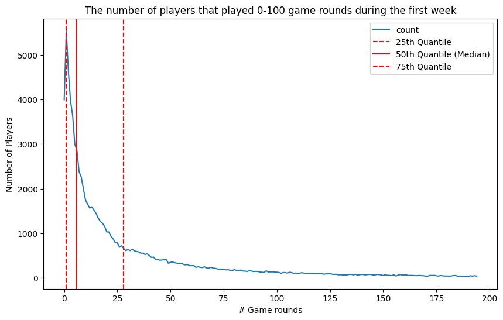
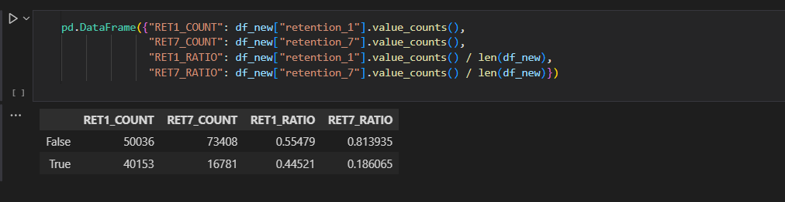
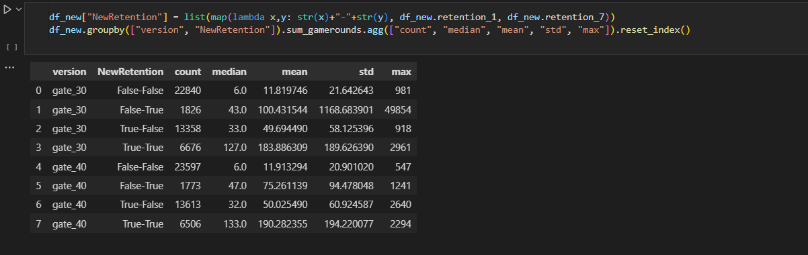
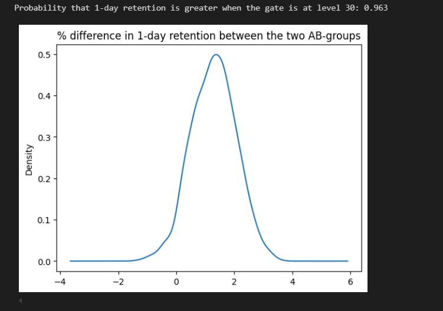
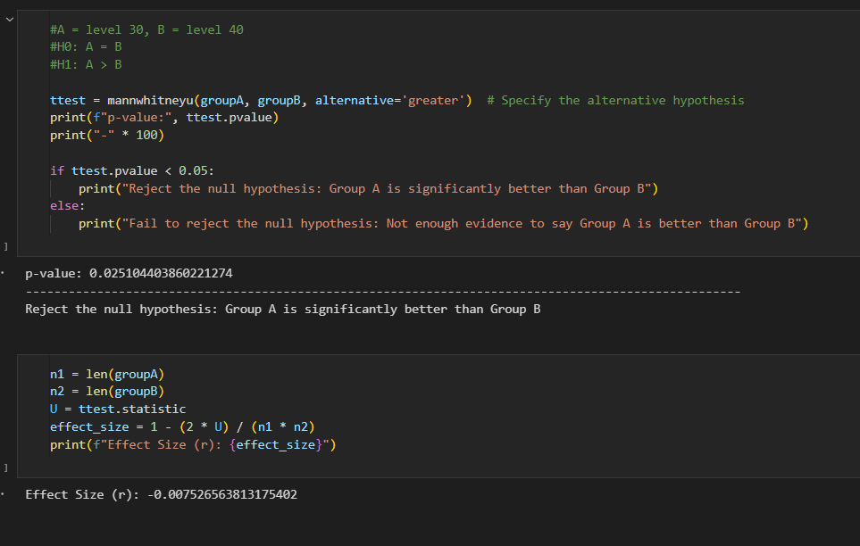
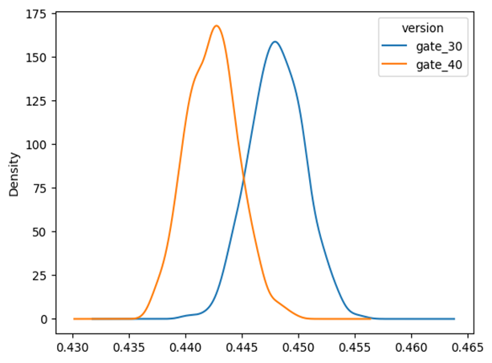
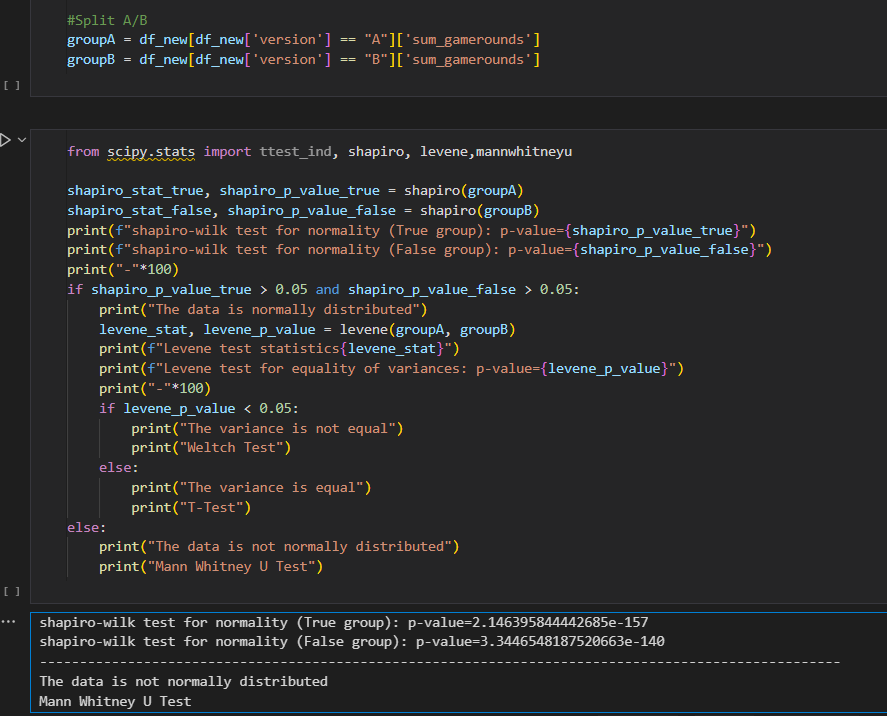

Description:
The mobile game, Cookie Cats, updated the "gate" from level 30 to level 40, where the "gate" is a game mechanic used to regulate players' progression by introducing a waiting period before they can access new levels.Data:
Questions to ask:
Breakdown
1. Visualization

- Started off with cleaning the data, by looking for nulls, empty data, duplicated data and removing outliers with IQR method.
- After cleaning, I plotted out the distribution of the total users VS the total games played.
- The quantiles is able to describe the distribution- where a small percentage of players played many rounds, while the majority played relatively few rounds.
2. Feature Engineering

- I proceeded to extract new features by calculating the ratio of retention_1 and retention_7 to sum_gamerounds.
- From my findings, 55% of the players didn't play the game 1 day after installing, while 81% of the players didnt play the game 7 days after installing 
- I continued to group the data into versions, combining retention_1 and retention_7, and aggregrate the data into statistical forms
- For both versions, players in the True-True group (retained on both day 1 and day 7) tend to have the highest median, mean, and maximum game rounds, indicating that these players are the most engaged.
- The False-False group has the lowest median and mean values, showing that players who were not retained at both intervals played significantly fewer game rounds.
- The standard deviation (std) is much higher in groups with higher mean and maximum values, indicating a wider spread of game rounds played by players in these groups (likely because some very active players skew the data)
- It is a procedure for estimating the distribution of an estimator by resampling.
- Despite having a decent sample size (~90k), I decided to use bootstrapping due to the highly-skewed distribution of the data.
- There's minimal overlap between the two distributions, indicating a likely significant difference between the versions.
- gate_30 appears to be performing better on the measured metric, as its distribution is shifted to the right. 
- I proceeded to plot the boostrap in percentage difference, which shows that the probability of gate_30 being better than gate_40 is 96.3%.
- I continued to do this for retention_7 variable.
- The bootstrap shows the performance of retention_1 and retention_7 based on different versions- which in this case gate_30 is better than gate_40.
- However, I do not know the performance, in terms of "sum of games played" by users based on different versions.
- I proceeded to split 2 different versions into group A and B, and did parametric test and homogenity of variance test.
- Based on the result, Mann-Whitney U Test is implemented due to non-parametric. 
- I did a right-tail test to see if gate_30 (A) is statistically significant to gate_40 (B), as the bootstrapping claims.
- The results show that A is better than B, however effect-size suggests that the difference isn't big.
- To improve retention rates for both 1-day and 7-day periods, setting the gate at level 30 appears to be a more effective strategy compared to level 40. This suggests that players are more likely to stay engaged with the game in the short term when the gate is at level 30.
- However, this improvement in retention does not necessarily translate to an increase in the total number of rounds played by users. While level 30 may help keep players around longer in the early stages, further strategies may be needed to increase overall player activity and engagement.
Observations:
3. Bootstrapping

-
Description:
Interpretations:
Observations:
4. A/B Testing
6. Conclusion
Summary:Although Group A does have a statistical significance over Group B when it comes to total amount of games played, however the effect-size suggest that the significance is minimal to real-world context.
This suggest that players activity of retention in 1 day or 7 days are statistically significance to the version of gate30 and gate40. However, when comes to the overall activity of total games played, the significance is very minimal.
Recommendations: